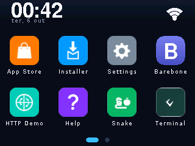
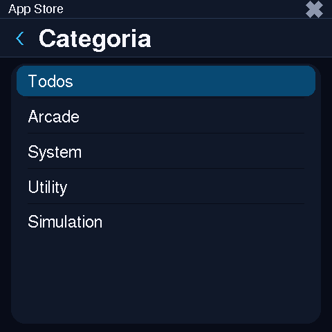
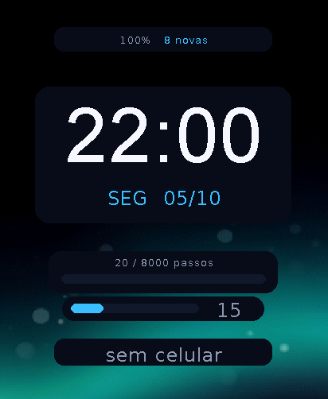
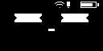
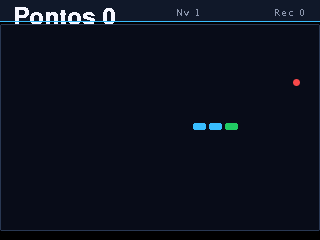
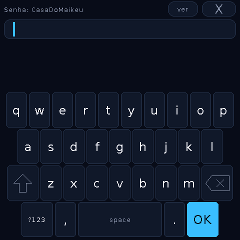
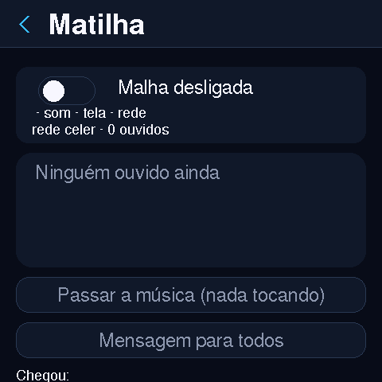

Wiki do ecossistema CelerOS
Tudo sobre o CelerOS e o hub os.celer.tec.br: as placas, a loja de apps que o dispositivo lê, os canais OTA, o desenvolvimento de apps em JavaScript e a operação do servidor — com screenshots reais capturados do framebuffer das placas via celerctl.
↑ números ao vivo de /api/info — o mesmo endpoint que o denv monitora.
Nas telas de verdade

CYD · launcher
SmartDisplay · loja
Watch · watchface
Dog · status
CYD · Snake
SmartDisplay · OTA
Matilha · 3 placasPor onde começar
O ecossistema
Firmware, hub, celerctl e App Store — como as peças se conectam.
Placas suportadas
As 5 placas com tela, canal OTA e o que cada uma tem de especial.
Primeiros passos
Do flash ao primeiro app instalado — provision, WiFi, loja e OTA.
CelerNet & matilha
A rede BLE entre as placas: presença, papéis, música itinerante e o PC no bando.
Desenvolver apps
JavaScript ES5 no Duktape, canvas 240×320, limites e publicação na loja.
OTA & firmware
Canais por placa, slots A/B, anti-rollback e o contrato do update.json.
API do hub
Todas as rotas — leitura pública, escrita com token e escopo.
celerctl
A ferramenta USB estilo adb: shell, push, screencap, tap, OTA…
Segurança
Tokens com escopo, uploads validados, rate limit e auditoria.
Deploy & ops
Stack denv, sync de conteúdo, secrets e monitoramento.
Está com pressa? A receita de 2 minutos: flash → celerctl provision --wifi →
abrir a App Store no aparelho → instalar o 2048. O resto desta wiki explica cada
peça — inclusive como publicar o seu próprio app e o seu firmware.